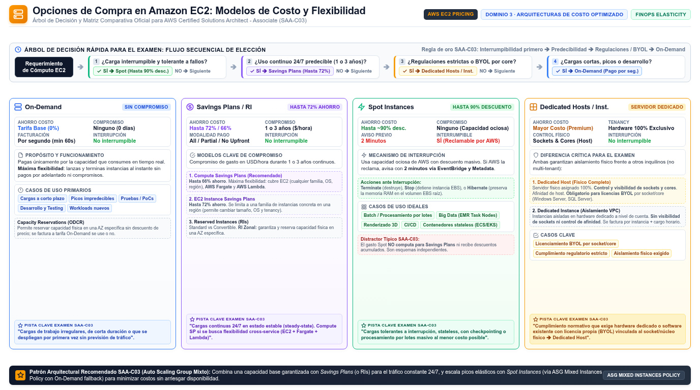

EC2: instancias, familias y opciones de compra Amazon Elastic Compute Cloud
El servicio de cómputo más preguntado del examen: qué instancia eliges, cómo la pagas y dónde la colocas — decisiones que cruzan D3 (performance) y D4 (costo).
Amazon EC2 proporciona capacidad de cómputo on-demand y escalable: servidores virtuales (instancias) que lanzas en segundos y pagas solo mientras corren. La analogía útil para el examen es la de un aparcamiento: la AMI es el molde del coche (sistema operativo + software preinstalado), el instance type es el modelo y tamaño del coche (CPU, memoria, disco, red), la opción de compra decide si alquilas por horas (On-Demand), tienes un contrato anual (Savings Plans, Reserved Instances) o buscas las plazas libres baratas (Spot), y el placement group decide dónde aparca (junto a sus amigos, repartido o en bloques separados).
El examen SAA-C03 no pregunta pantallas: presenta un workload y espera que elijas la combinación correcta de estas cuatro decisiones. Un error típico es memorizar nombres de instancias; lo que se evalúa es el razonamiento: "workload interrumpible y tolerante a fallos → Spot", "base de datos crítica con estados de subsistema de disco → io2 Block Express", "aplicación 24/7 con uso predecible → compromiso de 1 o 3 años". Esta página te da el mapa completo de esas decisiones, con las cifras que aparecen en la documentación oficial.
molde del servidor"] LT["Launch template
plantilla reutilizable"] IT["Instance type
familia y tamaño"] PO["Opción de compra
On-Demand · RI · SP · Spot"] PG["Placement group
dónde se coloca"] EC2["Instancia EC2
servidor virtual"] AMI --> LT IT --> LT PO --> LT PG --> LT LT --> EC2 classDef navy fill:#EFF6FF,stroke:#3B82F6,stroke-width:2px,color:#1E293B classDef green fill:#F0FDF4,stroke:#10B981,stroke-width:2px,color:#1E293B classDef amber fill:#FFF7ED,stroke:#F59E0B,stroke-width:2px,color:#1E293B class AMI,IT navy class LT,EC2 green class PO,PG amber
Familias de instancias: qué equilibrio de recursos necesitas
Cada instance type pertenece a una familia que prioriza un recurso. La regla mnemotécnica del examen son las letras: M y T equilibran, C es CPU, R es RAM, I y D son disco, P, G, Inf y Trn son aceleradores. El nombre completo se lee así: m7g.xlarge = familia M, generación 7, Graviton, tamaño xlarge. La generación importa: las familias actuales (5 en adelante) corren sobre el hypervisor Nitro, que aporta rendimiento y densidad; las generaciones previas basadas en Xen (M4, C4) son anteriores y no suelen ser respuesta correcta.
Dos apellidos que aparecen como distractores y como respuestas: Graviton (sufijo g) son procesadores ARM de AWS diseñados para el mejor price performance — si el enunciado pide "mejor relación costo/rendimiento" y no hay dependencia de software x86, Graviton es candidata fuerte. Trainium y Inferentia son chips para machine learning: Trainium está optimizado para training de modelos y Inferentia para inference de baja latencia. Los tamaños (large, xlarge, 2xlarge…) escalan los recursos en proporción, y puedes cambiar de tipo una vez lanzada la instancia (con un stop/start) si el workload cambia de perfil.
| Familia | Ejemplos | Optimizada para | Caso típico en el examen |
|---|---|---|---|
| General purpose (M, T) | m7g, m6i, t4g | Equilibrio CPU / memoria / red | Servidores web, microservicios, entornos dev/test. T es burstable: costo bajo con créditos de CPU para picos. |
| Compute optimized (C) | c7i, c6gn | Relación alta CPU respecto a RAM | Procesamiento por lotes, servidores de juegos, encoding de video, simulaciones de CPU. |
| Memory optimized (R, X, U) | r7g, x2idn, u-12tb1 | Mucha RAM por vCPU | Bases de datos en memoria, caches (Redis, Memcached), análisis in-memory de grandes datasets. U llega a decenas de TiB. |
| Storage optimized (I, D) | i4i, d3en | IOPS y throughput de disco local (instance store) altísimos | Bases NoSQL transaccionales (Cassandra, HBase), data warehouses, HDFS distribuido. |
| Accelerated computing (P, G, Inf, Trn) | p5, g6, inf2, trn2 | GPU y aceleradores dedicados | ML training (P, Trn), inference (Inf, G), gráficos y rendering (G). |
AMIs: la imagen dorada que define la instancia
Una AMI empaqueta el sistema operativo, el software y el block device mapping (qué volúmenes EBS o instance stores se adjuntan al arrancar). Es el punto de partida obligatorio: no hay instancia sin AMI. Para el examen importa su geografía: una AMI es específica de región, sistema operativo, arquitectura de procesador, tipo de volumen raíz y tipo de virtualización — por eso "lanzar la misma AMI en otra región" exige primero copiar la AMI a esa región. Puedes usar AMIs de AWS, públicas, compartidas por otras cuentas (o vía AWS Marketplace) o propias.
El patrón de arquitectura que se examina es la golden image: una AMI curada con SO parcheado + agente de la app + hardening base, de la que nacen todas las instancias idénticas del Auto Scaling group. Para fabricarla a escala se usa EC2 Image Builder, que automatiza creación, pruebas y despliegue de imágenes seguras y actualizadas, en lugar de construir AMIs a mano. Si el enunciado pide "consistencia y parcheo automatizado de imágenes", esa es la respuesta; si pide "lanzar instancias idénticas en otra cuenta", la herramienta es compartir la AMI (o AWS Backup/cross-account según contexto).
Opciones de compra: cómo pagas la misma instancia
Aquí vive el 20% del examen correspondiente a D4. La misma instancia m7g.xlarge tiene cuatro formas de facturarse, y la pregunta del examen siempre es la misma en el fondo: ¿qué tolerancia tiene tu workload a la interrupción y qué predecibilidad tiene su uso? On-Demand paga por segundo con cero compromiso; Reserved Instances y Savings Plans compran descuento con un compromiso de uso sostenido (1 o 3 años); Spot compra capacidad libre de AWS con descuentos muy agresivos a cambio de poder ser interrumpida con un aviso de dos minutos.
| Opción | Compromiso | Descuento | Cuándo es la respuesta |
|---|---|---|---|
| On-Demand | Ninguno; pago por segundo | Precio lista | Cargas de corta duración, irregulares o que no pueden interrumpirse ni comprometerse. |
| Reserved Instances | 1 o 3 años, sobre atributos de instancia | Significativo frente a On-Demand | Estado esteady 24/7 de un tipo de instancia concreto. Standard: mayor descuento, atributos casi fijos. Convertible: permite cambiar familia/tamaño/OS durante el plazo. La variante zonal además reserva capacidad física en una AZ. |
| Savings Plans | 1 o 3 años, sobre un gasto por hora de uso — USD/h | Hasta 72% | Mismo caso que RI pero con flexibilidad: Compute SP cubre EC2 sin importar familia, tamaño, OS, tenancy o región — y también aplica a Fargate y Lambda. EC2 Instance SP se limita a una familia de instancias en una región (más flexible que RI, menos que Compute SP). |
| Spot | Ninguno; capacidad sobrante de AWS | Descuentos muy profundos — hasta ~90% frente a On-Demand en la página oficial de Spot | Batch, análisis de datos, procesamiento en background, CI/CD, workloads tolerantes a interrupción con checkpointing. |
Tres matices de la documentación oficial que caen en preguntas. Primero, el Spot price se ajusta gradualmente según la oferta y demanda a largo plazo, y es distinto por tipo de instancia y por AZ. Segundo, AWS te avisa de una Spot interruption con 2 minutos de antelación; puedes elegir que la instancia se termine, se pare o hiberne, y existe además la señal de instance rebalance recommendation que llega antes del aviso formal, para rebalancear tareas proactivamente. Tercero — y este es un distractor favorito — el gasto en Spot no cuenta para los compromisos de Savings Plans ni recibe descuento adicional de ellos: la pregunta "¿combino Spot con Savings Plans para ahorrar más?" tiene respuesta "no, son ahorros independientes".

Placement groups: el control físico de la colocación
Un placement group te deja influir en dónde físicamente aterrizan tus instancias relacionadas. No tiene coste, y son solo tres estrategias las que importa memorizar con su caso de uso. Cluster empaqueta las instancias muy cerca dentro de una misma AZ para lograr la baja latencia de red de tipo HPC (alto rendimiento, gran riesgo correlacionado). Spread coloca un grupo pequeño de instancias en hardware subyacente distinto para reducir fallos correlacionados — es la respuesta cuando el enunciado dice "isolate critical instances". Partition reparte grandes grupos sobre particiones lógicas que no comparten hardware: la estrategia de Hadoop, Cassandra, Kafka y demás sistemas distribuidos replicados.
Reglas que el examen convierte en trampas: una instancia vive en un solo placement group a la vez; los grupos no se pueden fusionar; no se lanzan Dedicated Hosts dentro de ellos; y una Spot Instance configurada para stop o hibernate en interrupción no puede entrar en uno. Además, las On-Demand Capacity Reservations y las RI zonales reservan capacidad en una AZ concreta y se usan automáticamente si los atributos coinciden — útil para garantizar que tu grupo crítico siempre consigue capacidad.
| Estrategia | Cómo coloca | Caso de uso señal en el examen |
|---|---|---|
| Cluster | Juntas, dentro de una AZ | HPC tightly coupled, baja latencia red nodo-a-nodo, big data de un solo rack. Punto único de fallo aceptado. |
| Spread | Hardware distinto, grupos pequeños | Aislar instancias críticas individuales (p. ej. dos nodos de un clúster Oracle) minimizando fallos correlacionados. |
| Partition | Grupos por particiones lógicas sin hardware compartido | Sistemas distribuidos grandes y replicados: Hadoop, Cassandra, Kafka. Escala donde spread se queda corto. |
Hibernation: pausar una instancia conservando la RAM
La hibernation es la tercera vía entre stop y terminate. Al hibernar, EC2 señaliza al sistema operativo para hacer suspend-to-disk: el contenido de la RAM se guarda en el volumen raíz EBS, y al arrancar de nuevo el estado se restaura — los procesos se reanudan y la instancia conserva su instance ID. La factura mientras está hibernada: no pagas uso de instancia ni transferencia de RAM a EBS, pero sí pagas el almacenamiento EBS (incluido el que ocupa la RAM volcada). El caso de uso oficial que se examina: pre-warming de instancias cuya app tarda mucho en bootstrap y construir su memoria de trabajo — la llevas al estado deseado, la hibernas y la reanudas ya "caliente" cuando la necesitas.
- Elige familia por el recurso dominante del workload: M/T equilibrio, C CPU, R memoria, I/D disco, P/G/Inf/Trn aceleradores.
- Graviton (sufijo g) es la respuesta a "best price performance" sin dependencia x86.
- Compra: interrumpible → Spot (aviso de interrupción de 2 min); estado esteady → RI/Savings Plans; uso corto e irregular → On-Demand.
- Compute Savings Plan = máxima flexibilidad: EC2 sin importar familia/tamaño/OS/tenancy/región + Fargate + Lambda, hasta 72% de descuento.
- Spot no se apila con Savings Plans: ahorros independientes.
- Placement groups: cluster = latencia (HPC, una AZ), spread = aislar pocas críticas, partition = sistemas distribuidos grandes (Hadoop, Cassandra, Kafka).
- La AMI es específica de región: para usarla en otra, primero se copia; para fabricar golden images a escala, EC2 Image Builder.
- Hibernation vuelca la RAM al EBS raíz: sirve para pre-warm y no se paga uso de instancia mientras duerme.
- CMP-01 Amazon EC2 — What is Amazon EC2? Concepts · docs.aws.amazon.com/AWSEC2/latest/UserGuide/concepts.html
- CMP-02 Amazon EC2 — Instance types (familias y procesadores) · docs.aws.amazon.com/AWSEC2/latest/UserGuide/instance-types.html
- CMP-03 Amazon EC2 — Purchase options overview · docs.aws.amazon.com/AWSEC2/latest/UserGuide/ec2-purchase-options.html
- CMP-04 Amazon EC2 — Spot Instances (interrupciones, Spot Fleets) · docs.aws.amazon.com/AWSEC2/latest/UserGuide/using-spot-instances.html
- CMP-05 Amazon EC2 — Reserved Instances (Standard vs Convertible) · docs.aws.amazon.com/AWSEC2/latest/UserGuide/reserved-instances.html
- CMP-06 AWS Savings Plans — What are Savings Plans? · docs.aws.amazon.com/savingsplans/latest/userguide/what-is-savings-plans.html
- CMP-07 Amazon EC2 — Placement groups (cluster, spread, partition) · docs.aws.amazon.com/AWSEC2/latest/UserGuide/placement-groups.html
- CMP-08 Amazon EC2 — Hibernate your instance · docs.aws.amazon.com/AWSEC2/latest/UserGuide/Hibernate.html
- CMP-09 Amazon EC2 — Amazon Machine Images (AMIs) · docs.aws.amazon.com/AWSEC2/latest/UserGuide/AMIs.html